SkipperCast: what changed on screen, 2026-10-31
Left: before, c69a97e48 (2026-10-31 07:30 PDT). Right: after, 7e2275e1c (2026-10-31 22:11 PDT).
92 pull requests were merged between them. Pages with a visible change come first; pages that look exactly the same are at the bottom.
Orange outlines mark the areas that changed.
- 5 pages changed
- 0 new pages
- 7 no visible change
How these screenshots were taken
Both revisions were built from a clean checkout and served locally, then opened in the same Chromium at the same viewport, theme, time zone and random seed, with the clock fixed at 2026-10-31 12:00 PDT. The local server uses the same fixed clock: the Worker's own Date, and the dates of the test database's sample boats, reports and rules, are set to it, so the pages the server renders show the same dates whatever day they are captured. Forecasts, buoys, tides and map imagery are synthetic stand-ins and every outside service is blocked, so the only difference between the columns is the code. A page counts as rendered only when it answered without an error, threw no error, drew something and showed the element that proves it loaded. Each screenshot was kept only once two frames in a row matched, and each page was loaded afresh until two loads in a row gave the same picture. A pixel counts as changed when a colour channel moves by more than 2 levels out of 255; smaller moves are anti-aliasing noise that can differ even between two captures of one revision.
How these pages were chosen
The 92 pull requests merged to main on 2026-10-31 were read from the first-parent merge log (git log --first-parent). Each page below is a screen whose source files one or more of those merges changed: the Chart on the phone and laptop (attribution, open band, unpublished Chart files, Morro Bay lattice), the first-run choices at the sheet's peek, the landing (night map, readings, region warm-up), the Cambria region (new CUSP shoreline and land-water), the Conditions and History tabs and the brief (time-zone and unit refactors), the Spear profile (shore distance), and the port, species and boat pages the Worker renders (advisor time-zone constant). Screens that need a signed-in account (trip alerts) or the live 3D coastal terrain cannot be captured offline; they are listed at the end of the page instead of being guessed at.
/map?region=morro-bay (first visit)
Visible changePhone 390×844A first visit on a phone, before choosing how you fish: the choice card in the sheet at its lowest (peek) height.
79,716 pixels differ (24.2% of the screenshot), across most of the screen.
- #1090 [BL-SC-2] Phone peek: first-run choices above the tab bar
- #1089 [BL-SC-1] Phone Chart: attribution starts compact
- #1103 [RF0850-2] Chart coastline and contours skip unpublished files
- #1118 [RF0905-1] Phone Chart opens with the harbor in the open band
- #1148 [MAINRED-1] e2e: click where the phone Chart draws its centre (main red since #1118)
c69a97e48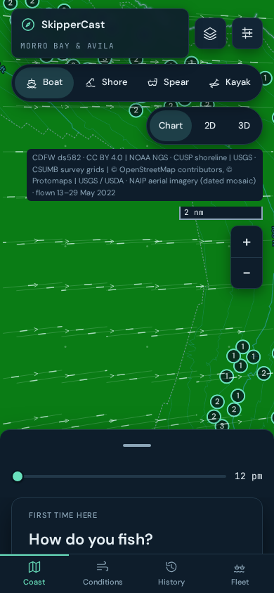
7e2275e1c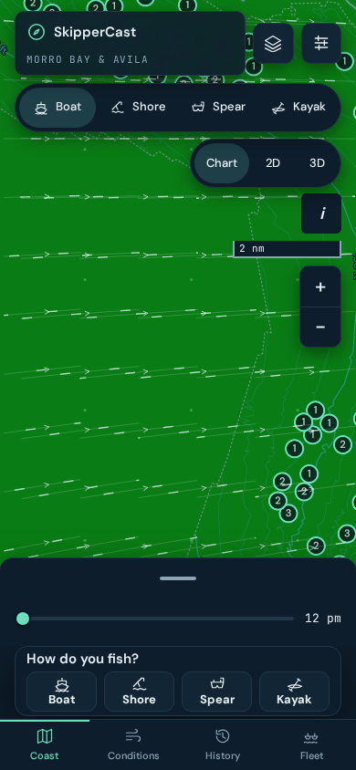
/map?region=morro-bay
Visible changePhone 390×844The app's main screen on a phone: the Morro Bay Chart with the forecast sheet.
63,704 pixels differ (19.4% of the screenshot), across most of the screen.
- #1089 [BL-SC-1] Phone Chart: attribution starts compact
- #1098 [RF0835-2] region.json lists its Chart files; warm-up skips missing ones
- #1101 [RF0850-1] land-water, poster and offline pack skip unpublished Chart files
- #1108 [RF1058-3] fold dist/marine-units.js into marine-charts.js
- #1103 [RF0850-2] Chart coastline and contours skip unpublished files
- #1113 [RF1140-5] coast package: one units module
- #1105 [RF0935-2] web: one default time-zone constant
- #1116 [RF0708-2] web/units.ts: one kt/ft source for the landing readout and habitat feed
- #1123 [RF1105-21] web: station model and depth disclaimer use web/units.ts
- #1118 [RF0905-1] Phone Chart opens with the harbor in the open band
- #1128 [RF1130-8] web: contrast reads units.ts; no conversion literal outside it
- #1148 [MAINRED-1] e2e: click where the phone Chart draws its centre (main red since #1118)
- #1158 [NB-SC-06] Morro Bay forecast lattice: shoreward column toward Estero Bay (#501)
- #1165 [NB-SC-03] v2 Terrain rail: habitat status line and ranked reefs (#519)
c69a97e48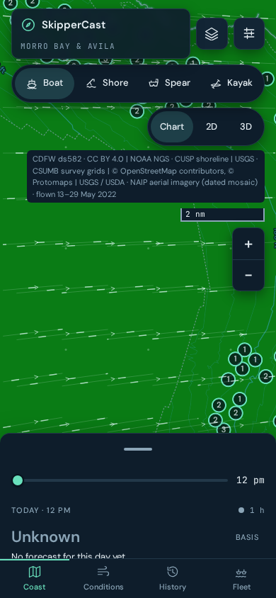
7e2275e1c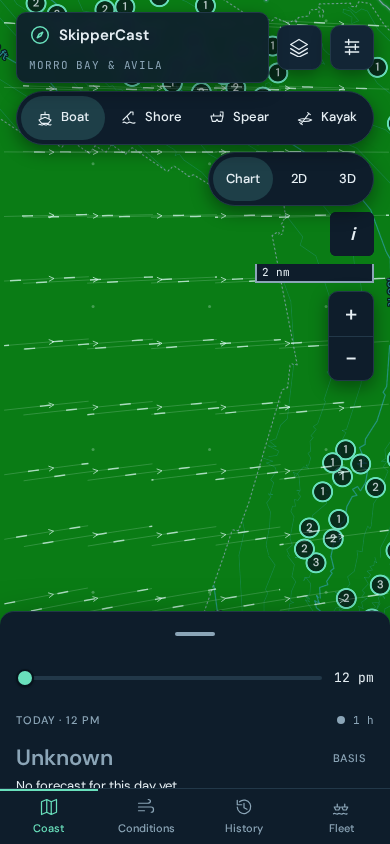
/map?region=cambria-san-simeon
Visible changePhone 390×844The Cambria and San Simeon region's Chart, which gained a NOAA shoreline and land-water today.
62,868 pixels differ (19.1% of the screenshot), in the middle of the screen.
- #1098 [RF0835-2] region.json lists its Chart files; warm-up skips missing ones
- #1101 [RF0850-1] land-water, poster and offline pack skip unpublished Chart files
- #1103 [RF0850-2] Chart coastline and contours skip unpublished files
- #1158 [NB-SC-06] Morro Bay forecast lattice: shoreward column toward Estero Bay (#501)
- #1162 [NB-SC-08] Cambria: NOAA CUSP shoreline and land-water
- #1172 [NB-SC-07] Cambria forecast lattice: 3 × 3 offshore points (#501)
c69a97e48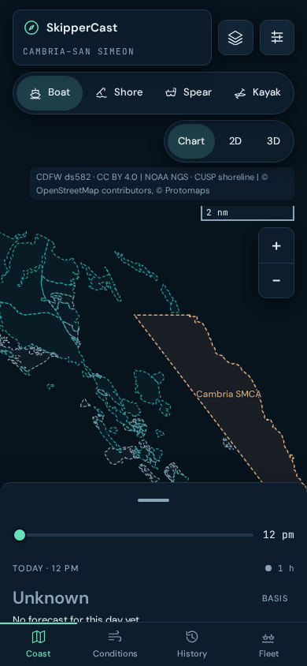
7e2275e1c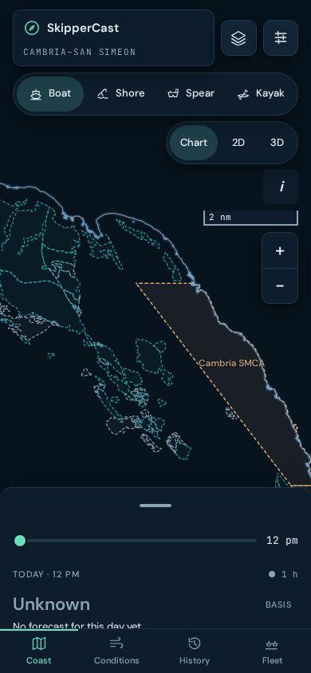
/map?region=morro-bay&view=conditions
Visible changePhone 390×844The Conditions tab: stations, readings and the depth disclaimer.
54,310 pixels differ (16.5% of the screenshot), across most of the screen.
- #1105 [RF0935-2] web: one default time-zone constant
- #1116 [RF0708-2] web/units.ts: one kt/ft source for the landing readout and habitat feed
- #1123 [RF1105-21] web: station model and depth disclaimer use web/units.ts
c69a97e48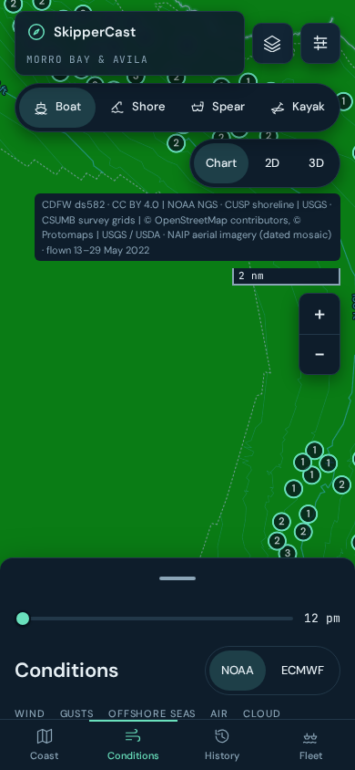
7e2275e1c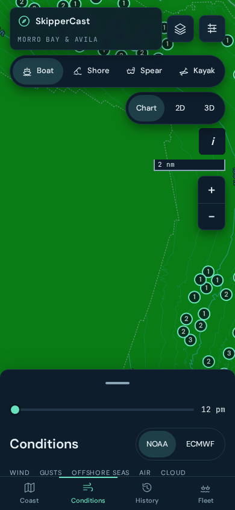
/map?region=morro-bay&profile=spear
Visible changePhone 390×844The Spear profile, which measures distance from shore.
41,559 pixels differ (12.6% of the screenshot), across most of the screen.
- #1089 [BL-SC-1] Phone Chart: attribution starts compact
- #1101 [RF0850-1] land-water, poster and offline pack skip unpublished Chart files
- #1103 [RF0850-2] Chart coastline and contours skip unpublished files
- #1105 [RF0935-2] web: one default time-zone constant
- #1104 [RF0935-1] Spear shore distance and contour export skip unpublished files
- #1118 [RF0905-1] Phone Chart opens with the harbor in the open band
- #1148 [MAINRED-1] e2e: click where the phone Chart draws its centre (main red since #1118)
c69a97e48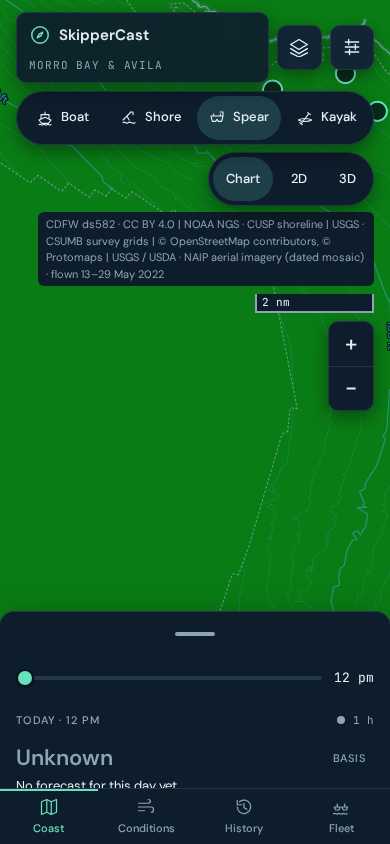
7e2275e1c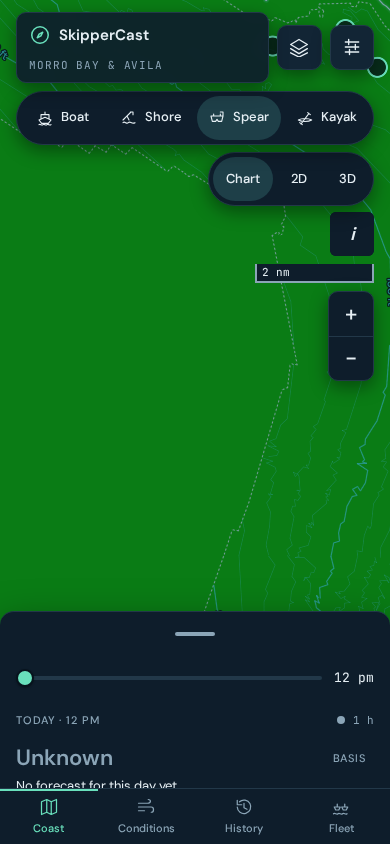
/map?region=morro-bay
No visible changeLaptop 1280×800The same screen on a laptop: the brief column beside the Chart.
No visible change: the two screenshots are identical, pixel for pixel.
- #1089 [BL-SC-1] Phone Chart: attribution starts compact
- #1098 [RF0835-2] region.json lists its Chart files; warm-up skips missing ones
- #1101 [RF0850-1] land-water, poster and offline pack skip unpublished Chart files
- #1108 [RF1058-3] fold dist/marine-units.js into marine-charts.js
- #1103 [RF0850-2] Chart coastline and contours skip unpublished files
- #1113 [RF1140-5] coast package: one units module
- #1105 [RF0935-2] web: one default time-zone constant
- #1116 [RF0708-2] web/units.ts: one kt/ft source for the landing readout and habitat feed
- #1123 [RF1105-21] web: station model and depth disclaimer use web/units.ts
- #1118 [RF0905-1] Phone Chart opens with the harbor in the open band
- #1128 [RF1130-8] web: contrast reads units.ts; no conversion literal outside it
- #1148 [MAINRED-1] e2e: click where the phone Chart draws its centre (main red since #1118)
- #1158 [NB-SC-06] Morro Bay forecast lattice: shoreward column toward Estero Bay (#501)
- #1165 [NB-SC-03] v2 Terrain rail: habitat status line and ranked reefs (#519)
c69a97e48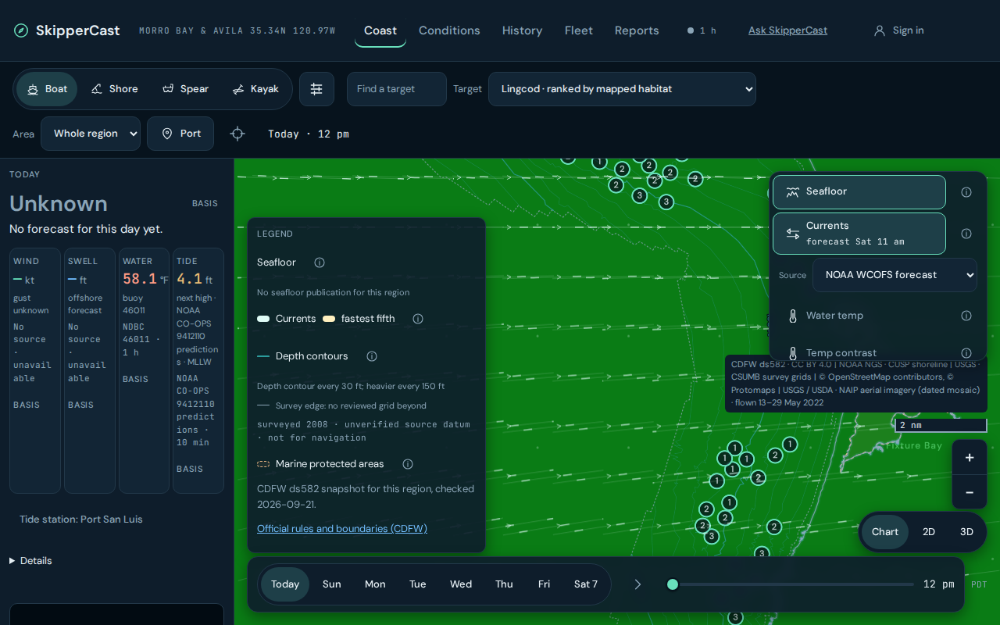
7e2275e1c/
No visible changePhone, whole page 390×1965The home page on a phone, top to bottom: live readings and the night map.
No visible change: the two screenshots are identical, pixel for pixel.
- #1090 [BL-SC-2] Phone peek: first-run choices above the tab bar
- #1098 [RF0835-2] region.json lists its Chart files; warm-up skips missing ones
- #1102 [RF0850-7] Night map draws without a published shoreline
- #1116 [RF0708-2] web/units.ts: one kt/ft source for the landing readout and habitat feed
c69a97e48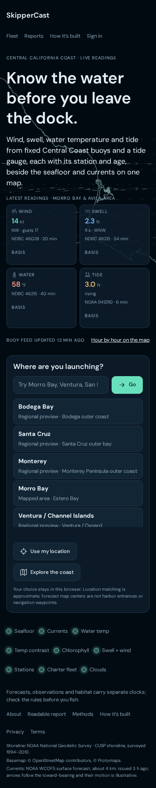
7e2275e1c/
No visible changeLaptop 1280×800The home page on a laptop, first screen.
No visible change: 54 pixels differ by at most 2 colour levels out of 255 (anti-aliasing noise at edges, invisible to the eye).
- #1090 [BL-SC-2] Phone peek: first-run choices above the tab bar
- #1098 [RF0835-2] region.json lists its Chart files; warm-up skips missing ones
- #1102 [RF0850-7] Night map draws without a published shoreline
- #1116 [RF0708-2] web/units.ts: one kt/ft source for the landing readout and habitat feed
c69a97e48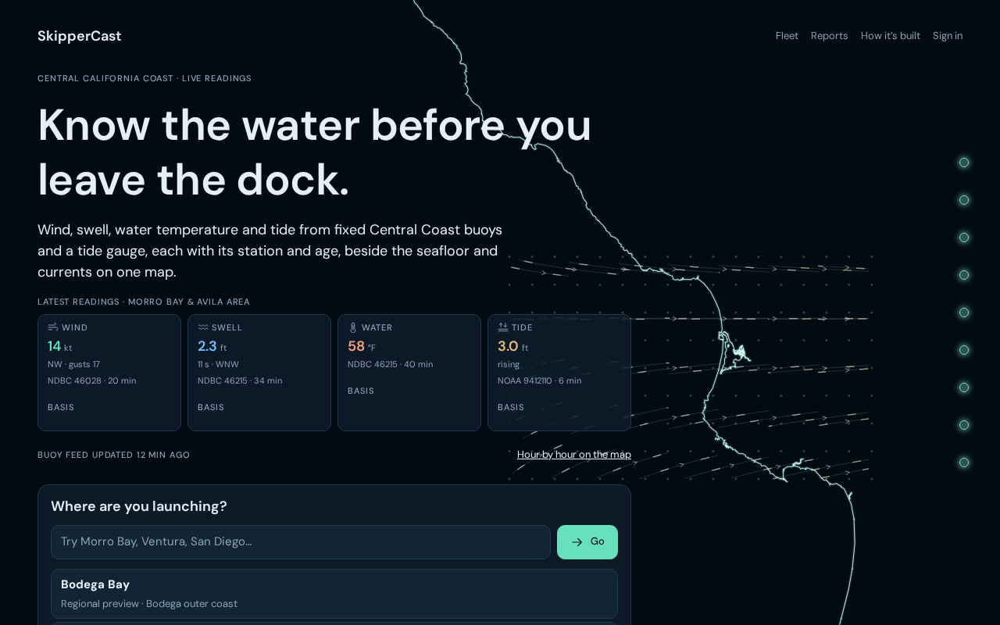
7e2275e1c/map?region=morro-bay&view=history
No visible changeLaptop 1280×800The History tab: past days and charter reports.
No visible change: the two screenshots are identical, pixel for pixel.
- #1105 [RF0935-2] web: one default time-zone constant
c69a97e48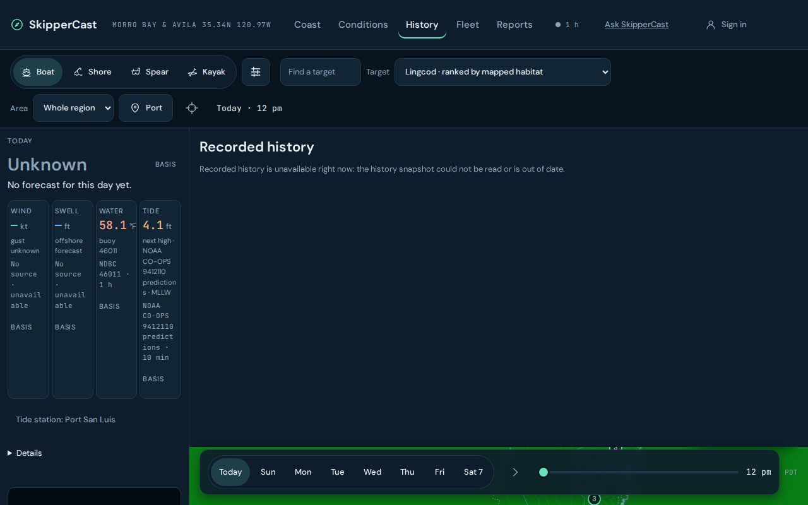
7e2275e1c/ports/morro-bay
No visible changePhone, whole page 390×1787The Morro Bay port report page the Worker renders.
No visible change: the two screenshots are identical, pixel for pixel.
- #1114 [RF1140-6] advisor: one default time-zone constant
- #1144 [RF1230-12] advisor dates: impossible ISO days refused (round trip, as fleet calendarDate)
c69a97e48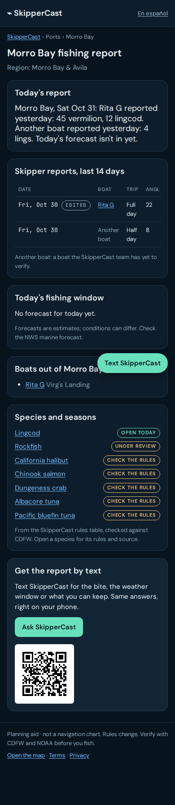
7e2275e1c/species/lingcod
No visible changePhone, whole page 390×2730A species page the Worker renders.
No visible change: the two screenshots are identical, pixel for pixel.
- #1114 [RF1140-6] advisor: one default time-zone constant
c69a97e48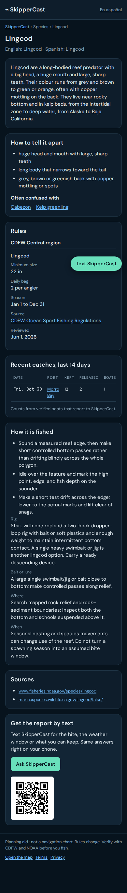
7e2275e1c/boats/e2e-rita-g
No visible changePhone, whole page 390×1076A charter boat page the Worker renders (the boat is a browser-test fixture, not a real listing).
No visible change: the two screenshots are identical, pixel for pixel.
- #1114 [RF1140-6] advisor: one default time-zone constant
c69a97e48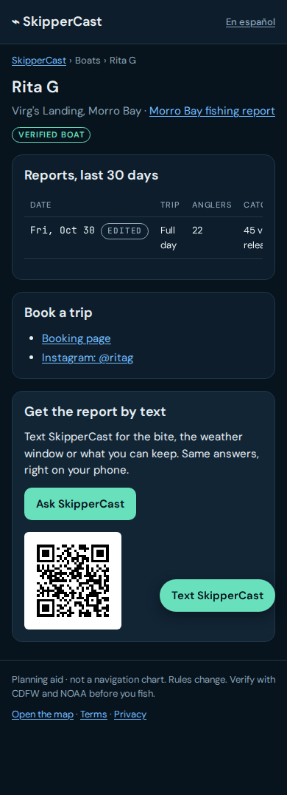
7e2275e1cChanges this gallery cannot show (4 pull requests)
Trip alerts: the alerts dialog and the notification tap that opens it belong to a signed-in account with saved trips. The gallery captures signed-out pages only, so these changes are not pictured.
- #1170 [SC1537-06] trip alerts dialog: plain area, species, kind and status names
- #1169 [SC1537-05] trip alerts: notification tap opens the saved-trip alerts dialog
3D coastal terrain: the Terrain rail's habitat line and ranked reefs, the renderer's habitat event, its shore palette and units draw only once the 3D terrain loads from the coastal data service. Offline (as here) the app says "Coast graphics are unavailable", so these changes are not pictured.
Merged pull requests with nothing on screen to show (67)
None of the files these changed is loaded by a page above: tests, CI, data pipelines, server-only code and documents.
- #1087 [CHL1] Chlorophyll adapter uses the newest file with data for the region
- #1086 [AUD-SC5] Drop the always-cancelled push trigger on live-conditions.yml; re-verify ledger guard
- #1093 [CHL2] Habitat health ignores an optional layer that has never produced data
- #1091 [BL-SC-4] Offline tests: no dependence on TMPDIR names or another installed skippercast
- #1094 [RF0805-3] Docs: seafloor job is daily; UTC rule for date-only values
- #1096 [RF0805-1] Fleet matcher: name and call sign on different boats never promote (#576)
- #1095 [RF0805-2] Fleet: pin Python activity kinds to the Worker enums (#608)
- #1097 [RF0835-1] server: one units module for the forecast sampler
- #1100 [CIS-SC-4] coast-close tests: build the closed campaign once per module
- #1099 [RF0905-2] region-build: golden_compare checks features and provenance
- #1107 [RF1058-2] fleet health: name the likely stale cause
- #1106 [RF1058-1] remove dead initBiteEvidence and dist/startup.js
- #1110 [RF1105-24] region-build/review: planted links refused before writing
- #1109 [RF1105-23] region-intake: no half INTAKE pair; links refused
- #1092 [AUD-SC7] Split the full-tier survey-tests job into parallel parts, same coverage
- #1112 [RF1120-5] region_publish: fresh temps; PUBLISH.md never follows a link
- #1111 [RF1120-6] phone capture: --out resolved through links before the repo check
- #1115 [RF0708-1] skippercast.units: one ft/m source for offline code
- #1117 [RF1105-4] region-publish: ledger row before PUBLISH.md; linked --ledger refused
- #1119 [CIS-SC-1-FIX1] deterministic test ids in test_coast_raw_grammar
- #1120 [RF1105-22] atlas export and AIS events use util.units (same values)
- #1122 [RF1200-9] telemetry: client error messages mask separated phone numbers
- #1121 [RF1200-6] boat lookup: a malformed source URL is skipped, not fatal
- #1124 [RF1210-3] DCO check: empty or mis-shaped input fails with a named error
- #1125 [RF1210-4] changelog_section: missing file and doubled heading named
- #1126 [RF1220-3] precache: sw.js checked before precache.json is written
- #1127 [CIS-SC-1] pytest-xdist 4 workers on the PR GIS leg and check pytest
- #1131 [RF1130-9] units: guard test keeps ft/kt/nmi literals in util/units.py
- #1130 [RF1220-4] rights coverage: both files or no output folder
- #1129 [RF1150-5] golden_compare: feature differences counted by contour key
- #1133 [RF1150-6] build_glyphs: print tool versions; --check compares a rebuild with the pins
- #1135 [CIS-SC-6] test rules: parallel-safe tests under xdist
- #1139 [RF1239-5] advisor upload: an empty file input is skipped, not uploaded
- #1138 [RF1239-4] advisor: upper-case and decomposed Ñ count as the Spanish marker
- #1137 [CIS-SC-6-F1] tests: coastal ops harness identity no longer depends on sys.path state
- #1136 EC: one bbox convention (end-exclusive) for ec_detect and ec_apply
- #1140 [EC-FIX-2] ec_verify: an overlap that repeats A's values is a copy, not a second survey
- #1143 [RF1230-7] http body: invalid UTF-8 refused as invalid JSON body
- #1134 [CIS-SC-2] Full-tier survey-tests parts run pytest -n 4 --dist load; runner CPU line
- #1142 [RF1230-10] report dates: an explicit year is never rolled back
- #1141 [RF1230-5] report_regulations: unreadable region health named; other regions still reported
- #1147 [RF1240-3] feed freshness: a future-dated feed is unreadable, not fresh
- #1146 [RF1230-6] multipart: filename*= (UTF-8) recognised; a bad one falls back, never throws
- #1145 [RF1240-7] run report: truncated cells and issue lists are marked
- #1150 [RF1240-10] validate: numeric error order and a "more" line
- #1154 [RF1300-8] advisor link codes: uniform draw, broken random source refused
- #1149 [RF1240-8] log: non-finite numbers are written as text, record kept
- #1153 [RF1300-7] legal-review verifier: missing/unreadable members named; receipt written whole
- #1152 [RF1300-6] advisor get_trips: say how many more verified boats the port page has
- #1151 [RF1300-4] advisor: one display-name cleaner (no invisible or direction controls, whole-character cut)
- #1155 [NB-SC-01] region-review: datum-verbatim accepts a BAG's declared metadata datum (M5d)
- #1159 [CIS-SC-3] One PR Python 3.13 so PR survey-tests reuse main's pip cache
- #1157 [NB-SC-04] draft-region-health: past-day catches failures left to the coverage gate
- #1160 Wait for every owned process group before coastal recovery test
- #1161 [FLAKE-1] Give the coastal byte-cap tests the production lease
- #1163 [PY311-PR] PR tier tests the same Pythons as main (3.11 and 3.13)
- #1166 [SC1537-01] trip alerts: NWS alerts read sends a User-Agent and Accept geo+json
- #1164 [RF1300-5] advisor update_profile: unknown targets named, known ones saved
- #1167 [NB-SC-09] catalog: morro-bay depth contours carry sources_omitted (M2 SG-1)
- #1168 [CIS-SC-5] e2e: 4 Playwright workers on CI
- #1174 [SC1537-03] trip alerts: missed-final only when the day-before slot really passed unassessed
- #1173 [SC1537-02] trip alerts: an advisory with an unreadable time counts as applicable
- #1171 [NB-SC-05] draft-region-health: one error class per failed source
- #1175 [SC1537-04] push delivery: retry 429/5xx receipts on later checks, at most 3 tries
- #1176 [SC1537-09] /api/om: per-IP limit on edge-cache misses only
- #1177 [SC1537-08] privacy export: list notification devices (host and date only)
- #1179 [SCMAINRED-2] e2e: saved trip reads by area and species name (fixes main red since 21:03)
Made by scripts/showcase.py from docs/showcase/pages-2026-10-31.json. To redo it: python scripts/showcase.py --before c69a97e48 --after 7e2275e1c --pages docs/showcase/pages-2026-10-31.json.